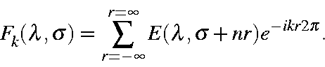
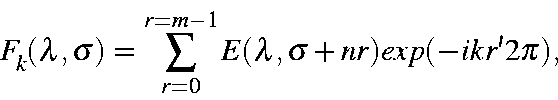

In a normal cluster calculation, the Fock matrix is diagonalized to yield
eigenvalues corresponding to various points in the Brillouin zone. For
m unit cells, the points generated are
0, 1/m, 2/m, ...up to 1/2. If
m is odd, the upper bound becomes
(m-1)/(2m). No other points in the
Brillouin zone can be generated by diagonalization.
In order to represent a general point, k, in the Brillouin zone, a complex
secular determinant, Fk, of size n must be constructed. The elements
of this matrix are

Because interactions between atomic orbitals fall off rapidly with distance,
the limits of r can be truncated to include all non-vanishing elements of
E, for the sake of convenience. However, these elements are precisely those
which were used in the construction of the Fock matrix. Using this, and the
fact that periodic boundary conditions were employed in the construction of
the Fock matrix, this summation can be simplified to

where r', the index of the unit cell, equals r while r is less than
m/2, otherwise r' = m-r. Band structures can then readily be constructed
by varying the wave-vector k over the range 0-0.5. Units of k are
2π/a,
where a is the fundamental unit cell repeat distance. The band
structure is then constructed by simply joining the points in the order in which they are generated.
Within band structures, bands of different symmetry are allowed to cross.
Simply joining the points does not allow for band crossing. However, when
the resulting bands are represented graphically, visual inspection readily
reveals which bands should, in fact, cross.